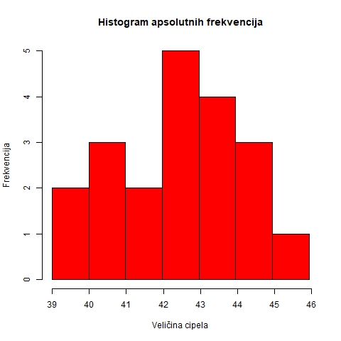

Zadatak 1:
Radi planiranja proizvodnje, fabrika obuće je na slučajan način odabrala grupu
od 20 ljudi i kod njih registrovala broj cipela:
39, 40, 44, 42, 43, 39, 41, 41, 44,
45, 42, 43, 42, 42, 40, 44, 43, 42, 40, 43.
a) predstaviti uzorak tabelarno
b) nacrtati histogram apsolutnih frekvencija.
Rešenje:
a)Za predstavljanje uzorka tabelerano potrebno je da prebrojimo koliko ljudi nosi
isti broj cipela. Dakle, u levoj koloni ćemo upisati brojeve cipela, dok
ćemo u desnoj upisati koliko ljudi nosi broj cipela koji je u istoj vrsti.
| VELIČINA CIPELA |
BROJ LJUDI |
| broj 39 |
2 |
| broj 40 |
3 |
| broj 41 |
2 |
| broj 42 |
5 |
| broj 43 |
4 |
| broj 44 |
3 |
| broj 45 |
1 |
b) U ovom delu zadatka nam se traži histogram apsolutnih frekvencija.
Ovakav histogram crtamo tako što će na x-osi biti veličine cipela, dok ćemo na y-osi
predstaviti broj ljudi koji nosi određenu veličinu.

Zadatak 2:
U fabrici satova vršena su merenja odstupanja prečnika osovine od
standardne veličine na 300 časovnika (u mikronima):
| ODSTUPANJA |
0-5 |
5-10 |
10-15 |
15-20 |
20-25 |
| BR.OSOVINA |
35 |
65 |
120 |
70 |
10 |
Nacrtati trakasti dijagram i izračunati uzoračku sredinu
(za vrednost svakog intervala uzima se središte tog intervala).
Rešenje:
Trakasti dijagram nije teško nacrtati jer već imamo tabelarni prikaz podataka,
pa ćemo samo podatke preneti na trakasti dijagram.
Znamo opštu formulu realizovane vrednosti uzoračke sredine:
$\overline{x}=\frac{(x_1+x_2+…+x_n)}{n}$
Ako saberemo broj svih osovina dobijamo da je
$n=35+65+120+70+10=300$
Za vrednosti intervala ćemo uzimati središte intervala koje računamo
kao zbir krajnjih vrednosti intervala podeljen sa dva.
Kako u svakom intervalu ima odredjen broj osovina, $x_i$, za svako $i$ iz $\overline{(1,5)}$.
računaćemo tako što ćemo vrednost središta svakog intervala pomnožiti sa brojem osovina.
$\overline{x}=\frac{1}{300}(35\frac{0+5}{2}+65\frac{5+10}{2}+
120\frac{10+15}{2}+70\frac{15+20}{2}+10\frac{20+25}{2})=$
$\frac{1}{300}(87.5+487.5+1500+1225+225)=\frac{1}{300}3525=11.75$
Zadatak 3:
Populaciju čine stabla jedne šume, njih 12580.
Radi održavanja i korišćenja šume stabla se klasifikuju po starosti:
| STAROST |
0-5 god. |
5-10 god. |
10-15 god. |
15-20 god. |
20-25 god. |
| BR.STABALA |
1220 |
910 |
5340 |
3750 |
1360 |
Nacrtati kružni dijagram i izračunati uzoračku sredinu(za vrednost svakog intervala uzima se središte tog intervala).
Rešenje:
Kao i za trakasti dijagram, imamo tabelarno prikazane podatke i nije teško preneti to na
kružni dijagram.
Opšta formula uzoračke sredine je data i u zadatku 2, pa ćemo je ovde direktno primeniti.
$n=12580$
$\overline{x}=\frac{1}{12580}(1220\frac{0+5}{2}+910\frac{5+10}{2}+
5340\frac{10+15}{2}+3750\frac{15+20}{2}+1360\frac{20+25}{2})=$
$\frac{1}{12580}(3050+6825+66750+65625+30600)=\frac{1}{12580}172850=13.74$
Zadatak 4:
Radi ocenjivanja prosečne visine svih učenica jedne gimnazije
izmerena je visina grupi od 20 učenica i dobijeni su sledeći rezultati:
| VISINA |
153cm |
154cm |
157cm |
169cm |
170cm |
171cm |
173cm |
| BR.UČENICA |
2 |
1 |
5 |
9 |
1 |
1 |
1 |
Izračunati prosečnu visinu učenica, medijanu i ocenu interkvartilnog rastojanja.
Rešenje:
Prosečnu visinu učenica možemo izračunati kao realizovanu vrednost uzoračke sredine.
U našem slučaju $n=20$.
$\overline{x}=\frac{1}{20}(2*153+154+5*157+9*169+170+171+173)=$
$=\frac{1}{20}3279=163.95$
Da bismo računali medijanu i ocenu za interkvartilno rastojanje potreban nam je varijacioni niz.
Imamo tabelarni prikaz sortiranih podataka što nam olakšava nalaženje varijacionog niza.
$(X_{(1)}, X_{(2)},X_{(3)}, X_{(4)}, X_{(5)}, X_{(6)}, X_{(7)}, X_{(8)}, X_{(9)}, X_{(10)},$
$ X_{(11)}, X_{(12)}, X_{(13)}, X_{(14)}, X_{(15)}, X_{(16)}, X_{(17)}, X_{(18)}, X_{(19)}, X_{(20)})=$
$(153, 153, 154, 157, 157, 157, 157, 157, 169, 169, 169, 169, 169, 169, 169, 169, 169, 170, 170, 173)$
Kako je uzorak paran : $n=2k$. U našem slučaju $n=20$ pa odavde očigledno možemo zaključiti da je $k=10$.
Po opštoj formuli za medijanu: $m_{(e)}=\frac{X_{(k)}+X_{(k+1)}}{2}$ sledi naša formula:
$ m_{(e)}=\frac{X_{(10)}+X_{(11)}}{2}=\frac{169+169}{2}=169$
$q_1$ ćemo naći kao medijanu prve polovine niza dok bi $q_3$ bila medijana druge polovine početnog
$q_1=\frac{X_{(5)}+X_{(6)}}{2}=\frac{157+157}{2}=157$
$q_3=\frac{X_{(15)}+X_{(16)}}{2}=\frac{169+169}{2}=169$
$IQR= q_3-q_1=169-157=12$
Zadatak 5:
U sledećoj tabeli dati su podaci o visinama 12 košarkaša jedne ekipe:
| VISINA (u cm) |
BROJ KOŠARKAŠA |
| 180-190 |
3 |
| 190-200 |
3 |
| 200-210 |
2 |
| 210-220 |
4 |
Izračunati uzoračku sredinu, uzoračku disperziju i popravljenu uzoračku disperziju
(za vrednost svakog intervala uzima se središte tog intervala).
Rešenje:
Uzoračku sredinu računamo kao i u prethodnim zadacima.
U ovom slučaju je $n=3+3+2+4=12$
$\overline{x}=\frac{1}{12}(3\frac{180+190}{2}+3\frac{190+200}{2}+
2\frac{200+210}{2}+4\frac{210+220}{2})=$
$\frac{1}{12}(555+585+410+860)=\frac{1}{12}2410=200.83$
Opšta formula uzoračke disperzije:
$\overline{S}^2= \frac{1}{n}\sum_{i=1}^{n}(X_i-\overline{X})^2$
U ovom zadatku:
$\overline{S}^2= \frac{1}{12}\sum_{i=1}^{12}(X_i-\overline{X})^2=$
$=\frac{1}{12}(3*{(185-200.83)}^2+3*{(195-200.83)}^2+2*{(205-200.83)}^2+4*{(215-200.83)}^2)=$
$=\frac{1}{12}(751.77+101.97+34.78+803.15)=\frac{1}{12}1691.67=140.97$
Opšta formula popravljene uzoračke disperzije:
$\widetilde{S}^2= \frac{1}{n-1}\sum_{i=1}^{n}(X_i-\overline{X})^2$
U našem slučaju:
$\widetilde{S}^2=\frac{1}{11}\sum_{i=1}^{12}(X_i-\overline{X})^2=\frac{1}{11}1691.67=153.79$
Zadatak 6:
Izmerene su dužine u centrimetrima 100 beba rođenih u jednoj bolnici
u određenom periodu:
| DUŽINA (u cm) |
BROJ BEBA |
| 40-43 |
1 |
| 43-46 |
4 |
| 46-49 |
20 |
| 49-52 |
43 |
| 52-55 |
30 |
| 55-58 |
2 |
Izračunati uzoračku sredinu, uzoračku disperziju i popravljenu uzoračku disperziju
(za vrednost svakog intervala uzima se središte tog intervala).
Rešenje:
Uzoračku sredinu računamo kao i u prethodnim zadacima.
U ovom slučaju je $n=100$
$\overline{x}=\frac{1}{100}(\frac{40+43}{2}+4\frac{43+46}{2}+
20\frac{46+49}{2}+43\frac{49+52}{2}+30\frac{52+55}{2}+2\frac{55+58}{2})=$
$\frac{1}{100}(41.5+178+950+2171.5+1605+113)=\frac{1}{100}5059=50.59$
Opštu formulu uzoračke disperzije smo videli u prethodnom zadatku,dakle ovde ćemo je samo primeniti:
$\overline{S}^2= \frac{1}{100}\sum_{i=1}^{100}(X_i-\overline{X})^2=$
$=\frac{1}{100}({(41.5-50.59)}^2+4*{(44.5-50.59)}^2+20*{(47.5-50.59)}^2+$
$+43*{(50.5-50.59)}^2+30*{(53.5-50.59)}^2+2*{(56.5-50.59)}^2)=$
$=\frac{1}{100}(82.63+148.35+190.96+0.35+254.04+69.86)=\frac{1}{100}746.55=7.46$
Opštu formulu popravljene uzoračke disperzije primenimo i dobijamo sledeće:
$\widetilde{S}^2=\frac{1}{99}\sum_{i=1}^{100}(X_i-\overline{X})^2=\frac{1}{99}746.55=7.54$